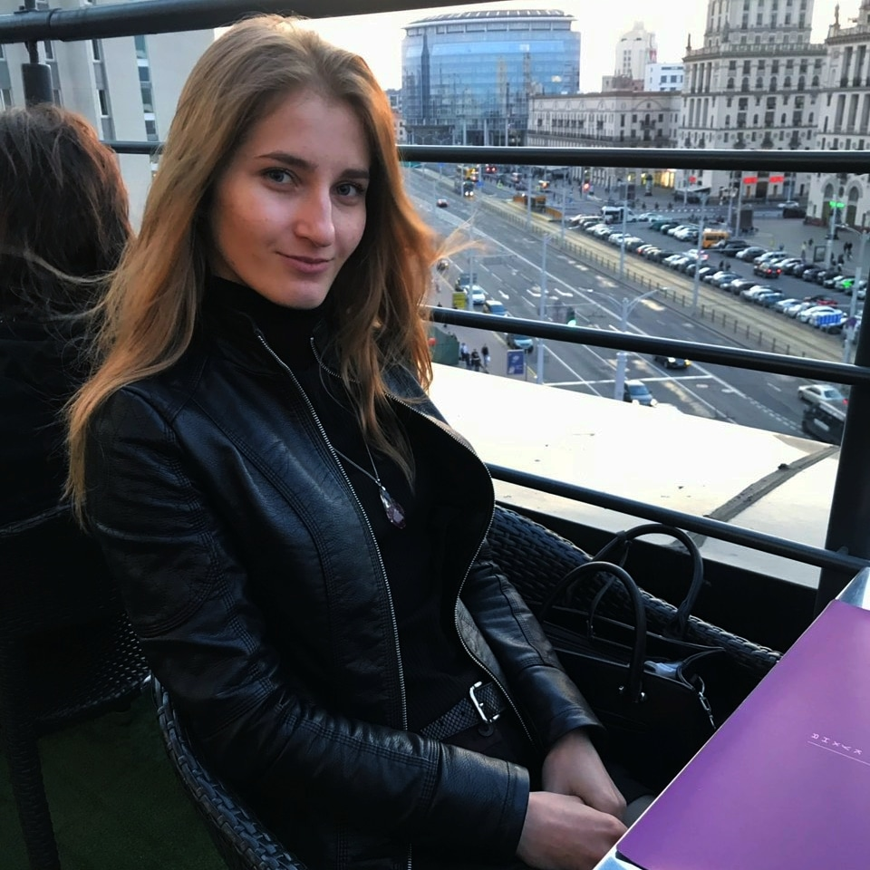
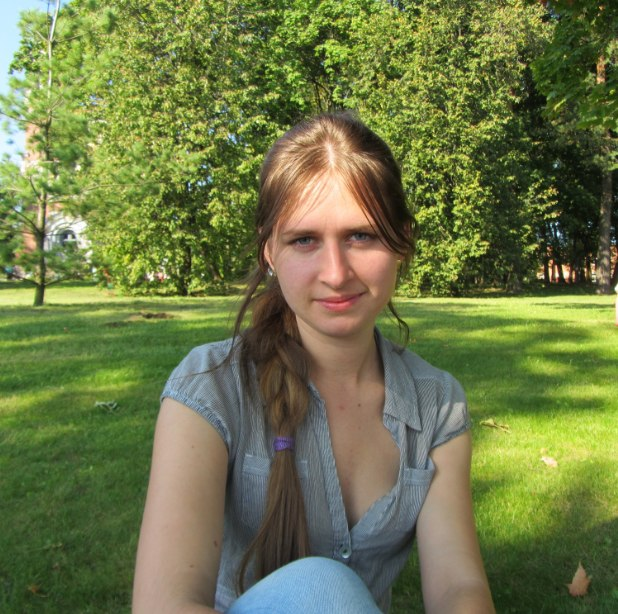
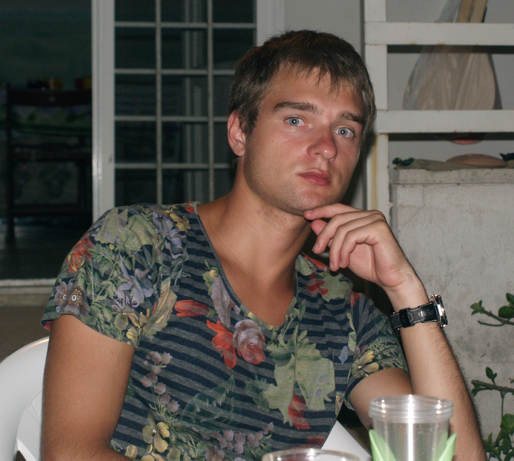
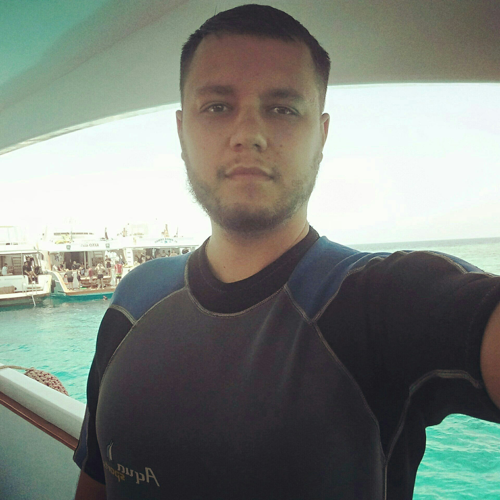
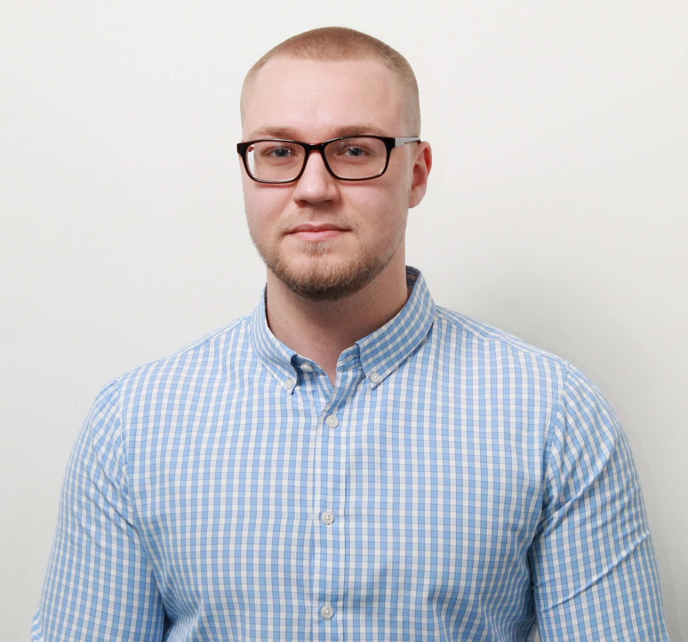

Общее впечатление такое: ни разу не пожалела, что отучилась именно в этом вузе.
Пришла учиться по совету родственника, который тоже окончил уир. Также перед поступлением писала в вк студентам, узнавала их отзывы, ни разу плохого отзыва не получила от них.
Очень хороший универ, много бюджетных мест (по крайне мере в год нашего набора так было), стипендия выше, чем в других универах, классные преподаватели на всех специальностях, свой спорткомплекс, академия идет навстречу людям, которые сами находят себе места для практики/распределения, любой преподаватель может помочь при написании курсовой/диплома, даже если не курирует тебя, 1 смена обучения была оч, кстати.
Плюсы нашей специальности - крутые преподаватели как по знаниям, так и по человеческим отношениям (отпускали на работу, разрешали приходить сдавать лабы с другими группами), неплохая техн. база, предметы не из какой-то одной определенной сферы, что дает возможность выбора будущей профессии, англ 3 года (супер полезно для айтишников), хорошая образовательная программа.
Преподаватели практически с самого начала обучения рассказывали, куда поступают выпускники, какие специальности актуальны (в основном ИТ направления), как люди активно продвигаются по карьерным лестницам, уезжают за границу и тд.
Также многие в курсе, какие компании какие курсы проводят, куда можно податься для обучения, в целом могут дать дельные советы на основе своего опыта.
Работаю я сейчас инженером-тестировщиком в ИТ компании, работаю с 5 семестра, занимаюсь ручным и автоматизированным тестированием.
Почему пошла в тестировщики?
Изначально хотелось ИТ, но чтобы начать с самых низов, узнать, как все работает, устроено, ведь расти и менять деятельность (на программирование, БА,дизайн) можно без проблем. Также много выпускников академии идут в тестирование, тк в универе достаточно дается технических знаний, чтобы быть лучше выпускников иняза и тд, которые обычно работают тоже тестерами. Не хотела сразу заниматься программированием, тк у нас очень мало его в универе, да и в принципе не на то план обучения направлен.
Мой взгляд больше со стороны человека, работающего в ИТ, поэтому про банковских работников/экономистов/налоговиков/бухгалтеров (а такие у нас есть среди выпускников) ничего не могу сказать))
Сейчас я работаю в SC&, а именно занимаюсь анализом требований и тестированием мобильных приложений.
Учёба помогла, на самом деле, очень сильно, потому что нам давали разных предметов понемногу, и у меня сложилось довольно хорошее представление и о программировании, и об администрировании, и о процессах разработки ПО в целом. Можно было при желании углубиться куда угодно - это большой плюс (если понимать, куда хочется развиваться, и не лениться, то общие знания о разных аспектах и ролях в IT - это здорово).
Некоторые знания по экономике пригодились, и предметы из управления (если идти в сторону менеджмента, ну или просто понимать, что происходит вокруг).
Плюс специальности: вот эта разноплановость (УИР задумывали как бизнес-аналитиков, и в этой области, а также в тестировании - точно удачно, на мой взгляд). Например, когда я начала работать тестировщиком, я заметила, что есть некоторые вещи, которых не знают мои коллеги-программисты или тестировщики, пришедшие из других вузов. Я имею в виду некоторые теоретические вещи про разработку, этапы управления, менеджмент или анализ требований.
Я не знаю, как сейчас, но 10-15 лет назад, когда я училась, в академии было много пафоса и не хватало неформального подхода (это в целом, т.к. как раз именно на нашей кафедре и специальности с этим был порядок), более интересной подачи лекций и, наверное, чуть более продуманной и последовательной программы, хотя я
уверена, что многое уже изменилось.
Мне сложно говорить сейчас про академию как вуз в целом, хм. Я не люблю жёсткие структуры, а она именно такая. Но я до сих пор захаживаю с Димой в столовку, где вкусно, и иногда вижу в бассейне Галину Сергеевну, научившую меня хорошо плавать))). Так что, наверное, можно сказать, что люблю Академию за основательность, вот.
Кафедру нашу УИР всегда обожала всей душой, и сама с удовольствием работала на кафедре ЭММУ, потому что люблю айти, математику и классных людей, а у нас таких было большинство.
 Плюсы: современное здание и само учебное заведение (многие универы беларуси очень старые, техника, мебель, аудитории очень плохо выглядят). Есть свой хороший спорткомплекс, общаги. В целом, нравилось, что специальностей не так много, мне кажется, внимание и интерес преподов более концентрированные. По знаниям я б не сказала, что супер. Много чего устарело. Плюсы в том, что все студенты, особенно старших курсов, сами занимаются и увлекаются айти. Из-за этого складывается классная тусовка, за счет которой и обучаешься. Я занимаюсь контекстной рекламой. Есть вещи, которые с универа использую в работе. Но их очень мало. Я бы сказала, что на такой специальности формируется определенное мышление, которое потом используешь в работе, а не какие-то конкретные дисциплины.
Академия в целом и уир в частности даёт отличную базу, и самое важное - способность учиться и постоянно развиваться, желание совершенствовать себя и разбираться в новых областях, не бояться и преодолевать сложные задачки. Учёба повлияла на выбор профессии коренным образом, я сейчас работаю бизнес-аналитиком в банке.

Добрый день! Академия управления - дала мне саму профессию. Я работаю менеджером IT проектов (сейчас уже главным менеджером).
Самое главное, чему я научилась - это четкое понимание предметной области информационных технологий, инструменты и применение это на практике (все знания которые я получила в Академии уже на протяжение 9 лет (примерно столько лет назад закончила) я ЕЖЕДНЕВНО применяю на практике - это прежде всего управление рисками, управление проектами, мат статистика, алгоритмы, основы программирования, (до поступления в Академию интереса к компьютеру не было, все ограничивалось функцией включить и все), умение думать, строить взаимоотношения.
Я директор по развитию бизнеса в компании Blinger.io. За 4 года мы вырастили компанию с 5 человек до 20, подняли 3 раунда инвестиций. Последний раунд был с оценкой компании в 5 млн. долларов. Привлекли сотни клиентов от мелких интернет магазинов до крупных банков и авиакомпаний.
Благодаря обучению в Академии Управления я научился учиться, разбираться в разных областях от экономики до менеджмента, от программирования до права. Еще в Академии из-за относительно небольшого кол-ва студентов создается отличное комьюнити.
В общем, Академию я закончила в 2015-ом. Я училась на УИРе, когда еще обучение было 5 лет. Так быстро время пролетело. Вы меня даже немного в ностальгию погрузили =)
На данный момент я живу и работаю в Эстонии в продуктовой компании. Должность моя называется Software automation engineer, test lead. По сути каждый день я пишу код (java) и занимаюсь микроменеджментов тестовых процессов на проекте. Как я оказалась в Эстонии - не специально. У меня не было никогда идеи уехать из Беларуси, но в какой-то момент предложили классный проект. Договорились, что приеду на год, а там посмотрим. Ну.. год как-то затянулся =)
В целом, если у меня спросят, работаешь ли ты по специальности, я скажу, да. Конечно, нас не учили на УИРе непосредственно автоматизации тестирования, но нам дали базовые знания в разных сферах. Исходя из которых я, наверно, смогла как-то лучше осознать для себя, чем бы мне хотелось заниматься конкретно. Например, мне нравилась алгоритмизация (у нас вела в то время Невмержицкая Александра, даже не знаю, работает ли она еще в Академии), базы данных, дискретная математика, английский(вела у нас зав.кафедры Лещева, очень рада, классная преподаватель, жаль, что ушла из Академии) и др. В общем, если так подумать, это все, прямо или косвенно, я использую в работе.
Помню, как на работе многие удивлялись, что я с айти бэкграундом из Академии управления. Я была у них на тот момент первым таким человеком. Обычно брали людей из Бгуира или Бнту. Потом появились еще люди из Академии, так что я думаю, мне удалось создать хорошую репутацию УИРу на тот момент =D
 Привет, работаю бизнес-аналитиком, в универе у нас была солянка из программирования, математики и экономики, в итоге это оч хорошая база чтобы самостоятельно почитать пару книжек и стать системным аналитиком либо программистом, тут уже кому что нравится.
Добрый вечер) На данный момент я занимаю позицию Middle Business Analyst в компании eWave ( https://ewave.com/). Сейчас я в роли БА веду несколько иностранных проектов (Австралия, Америка), немного помогаю на стадии пресейлов (проводим анализ новых проектов и эстимируем их), а также я являюсь одним из бизнес-аналитиков, кто ведет внутрикомпанейскую школу джуниор бизнес-аналитиков. (Рассказываем новым ребятам о компании, работе БА, обучаем основным БА навыкам, а также специфики работы в компании).
Честно говоря, работа мне очень нравится, хоть порой бывают сложные и стрессовые дни. Не знаю, надо ли это, но обычно мой день строится следующим образом (коммуникация с клиентом (Австралия), работа с командой, написание аналитических документов, работа в БА школе, коммуникация с клиентом (Америка)). И так по кругу, конечно, не все дни одинаковые, но активность которая есть постоянно - это общение с клиентом и командой:)
На самом деле УИР дал мне базу, которая позволила успешно поступить на курсы (да-да, чтобы попасть на курсы по БА, нужно было пройти собеседование), ну и, конечно, IT база необходима на работе.
Очень сильно помогло то, что в академиии мне дали понимание таких пунктов, как: программирование, базы данных, проектирование ИС и вообще понятие ИС, научили моделировать процессы. Многому из этого не учат на курсах, но знание этого необходимо в работе, ведь работа БА - это не просто разговор с клиентом - это также умение предложить решение клиенту с технической точки зрения, написать техническую спецификацию для девелоперов, дать клиенту советы касательно технических сторон. Все это очень важно) Также стоит отметить, что у нас в Акадимии давали IT английский) тоже очень помогла мне, так как у меня нет ни одного русскоязычного клиента, а общаться нужно очень много) Для старта работы мне хватило знаний английского - ну а дальше, как говориться, учимся на работе.
Еще, у нас было несколько гуманитираных предметов в академии. Когда мы учились - я не понимала, зачем они мне нужны и что я вообще делаю на этих парах, например, на психологии или социологии. В результате эти предметы также оказались очень полезными, ведь когда ты работаешь в команде с разными людьми, у каждого свой характер, мировозрение нужно уметь понять каждого, приспособиться, сплотить команду. Также нужно понимать и культурные особенности при общении с клиентом, уметь правильно вести с ним диалог в любой ситуации: будь то приятные вещи или моменты, когда нужно отстоять свою команду.
 День добрый, Дмитрию привет =) я занимаюсь бизнес анализом. Обучение на УИРе дало классный кругозор в ИТ и, что важно, отличную работу по специальности :)

Привет! :)
На данный момент я работаю как full stack software engineer в компании Itechart.
УИР полностью определил мой дальнейший выбор карьеры и как я считаю, дал для этого все возможности.
Что касается изменений в обучении, то тут всё неоднозначно, но, наверное, в принципе, и ничего конкретно менять не стоит, есть лишь возможности для апгрейда:
1) по некоторым предметам актуализировать информацию (допустим дисциплина базы данных - очень нужный, но на примере майкрасофт аксесс изучать стоит его только пару занятий, и потом брать уже актуальные базы данных, либо АИП можно прекрасно изучать используя питон, джаву. Хотя и на си, си++ можно это прекрасно делать, но всё же рынок сейчас требует другого)
2) к каждому предмету добавить пару лекций для объяснения где это пригодится, почему это стоит учить, какие профессии требуют этого, в каких область нужно - желательно доступным языком
3) больше свободы преподавателям (они в академии действительно супер!) под свободой я также имею в виду - возможность спокойно отчислять студентов. Именно этого не хватает на некоторых предметах, чтобы студенты боялись вылететь из универа.
Да, может звучит не очень, но студенты уверены, что прокатит/здесь не отчисляют и это очень сильно сказывается на мотивации.
4) продолжить практику свободных графиков для тех, кто работает - это шикарная штука.
5) нужно чтобы студенты понимали, что образование - это лишь база для себя будущего, универ твою карьеру не определяет. ты определишь её сам. УИР - это возможность выбрать ЛЮБУЮ профессию в айти и не только - ибо у нас затрагиваются ВСЕ нужные для этого темы.